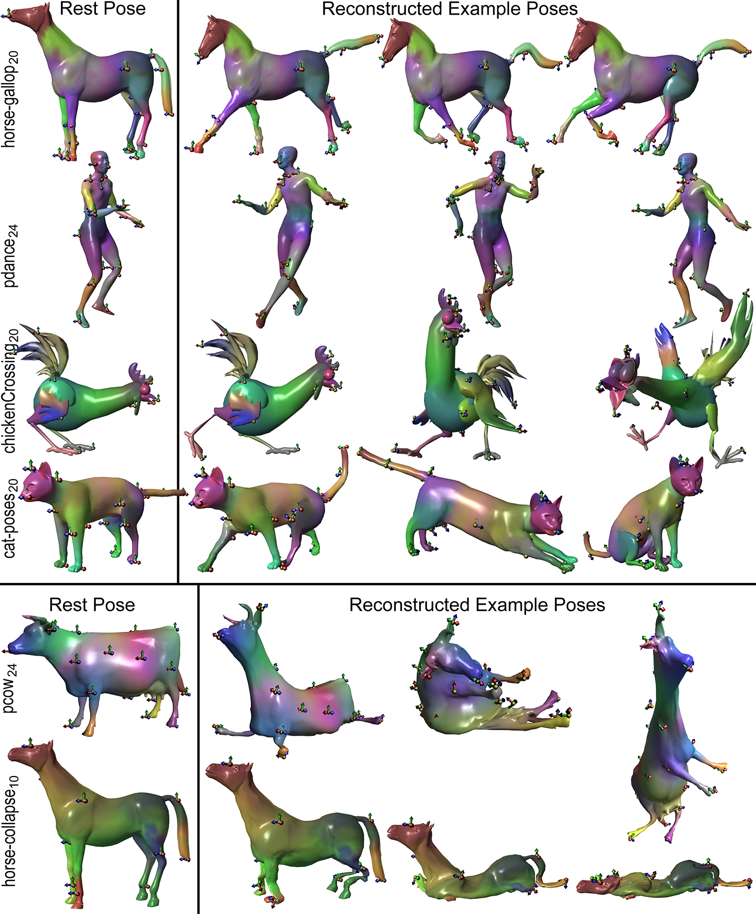
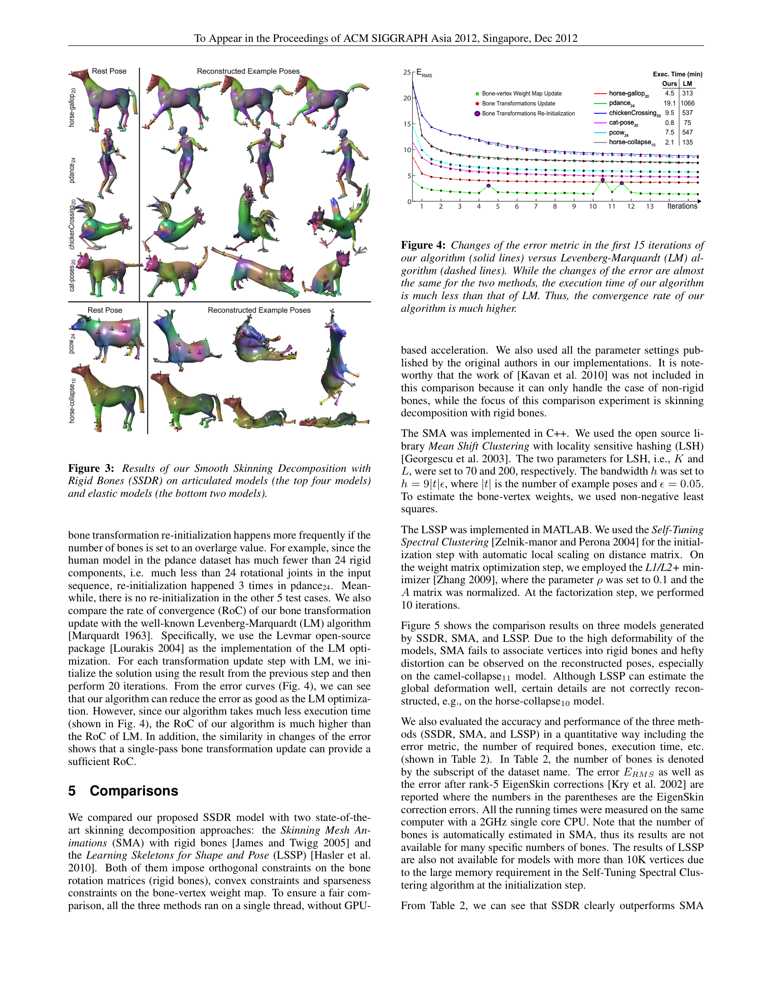
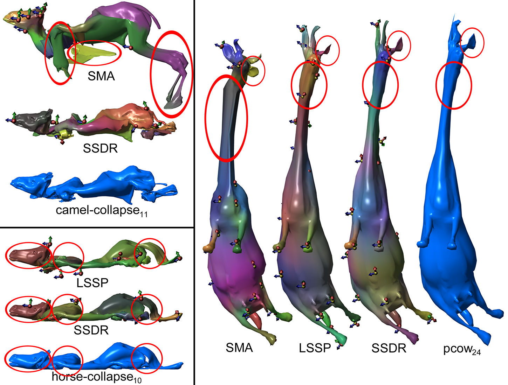
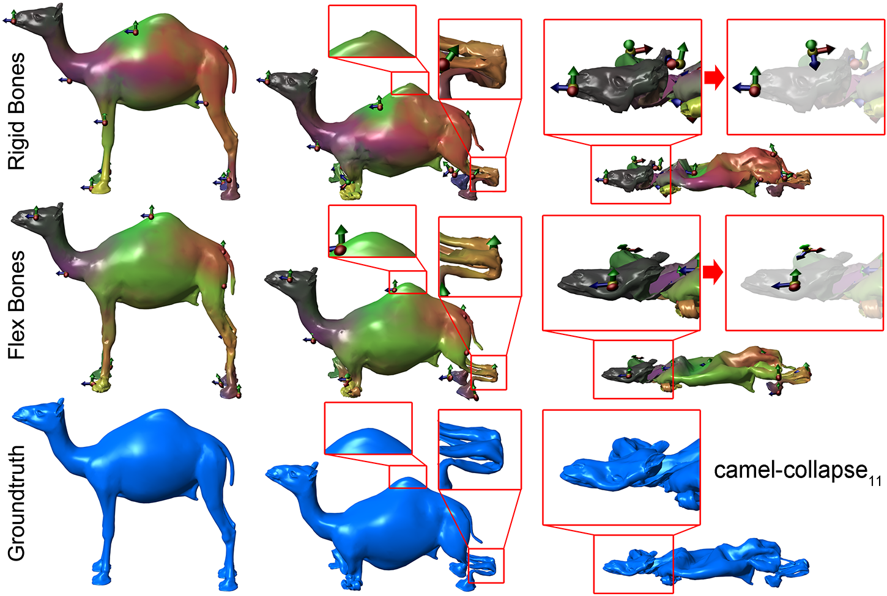
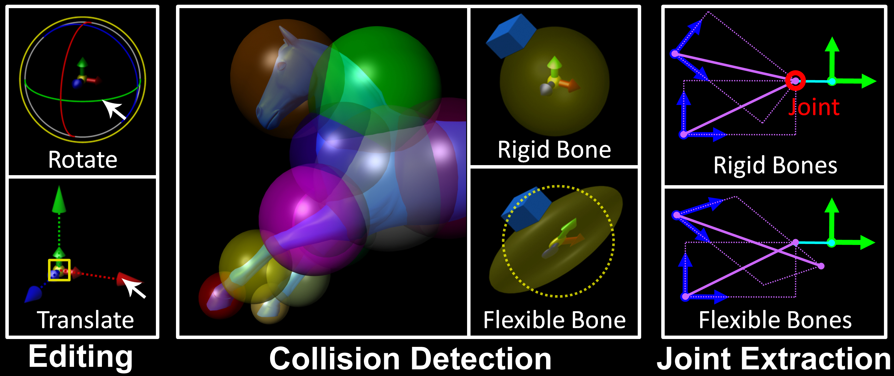

Smooth Skinning Decomposition with Rigid Bones (SSDR)
刚性骨骼的平滑蒙皮分解
论文详解文档
目录
1. 基本信息
| 项目 | 内容 |
|---|---|
| 论文标题 | Smooth Skinning Decomposition with Rigid Bones |
| 中文译名 | 刚性骨骼的平滑蒙皮分解 |
| 发表会议 | ACM SIGGRAPH Asia 2012 |
| 作者单位 | 美国休斯顿大学 |
| 主要作者 | Binh Huy Le, Zhigang Deng |
| 关键词 | 蒙皮分解、线性混合蒙皮、几何变形、块坐标下降 |
| 代码/数据 | 公开数据集（Deformation Transfer、Geometry Videos 等） |
📖 关联笔记：本文涉及的基础知识已整理至 GAMES105/Skinning.md（蒙皮绑定、LBS 公式、权重约束、刚性骨骼约束）。
2. 核心问题：这篇论文要解决什么问题？
2.1 背景故事
想象一下你在看一部 3D 动画电影，比如《冰雪奇缘》或者《疯狂动物城》。里面的角色会有各种丰富的表情和动作——奔跑、跳跃、挥手、皱眉等等。
问题来了：计算机是怎么让 3D 角色动起来的？
在 3D 动画和游戏中，角色通常由一个 3D 网格（Mesh） 构成——你可以把它想象成一张由无数三角形拼成的"皮"。
要让这张"皮"动起来，最常用的方法叫做 线性混合蒙皮（Linear Blend Skinning，简称 LBS）。这个方法的原理非常直观：
- 角色的皮里面藏着一个 骨架（Skeleton/Bones）——就像人体的骨骼一样
- 每根骨头控制皮的一部分区域
- 当骨头移动/旋转时，它控制的皮也就跟着动
举个简单的例子：你的手臂
- 手臂里面有一根"骨头"（肱骨）
- 当你旋转手臂时，手臂上的皮肉跟着动
- LBS 就是用数学来模拟这个过程
2.2 蒙皮分解：逆向工程 LBS
这篇论文要解决的是 LBS 的 逆向问题：
已知：一个角色的多个姿态（已经做好的动画）
求：这个角色的骨架是什么样的？每根骨头控制哪些部位？骨头是怎么转的？
这就好比你拿到了一段人偶动画的视频，但不知道人偶内部骨架的结构，需要你从外部形变 反推 出骨架。
为什么这个问题重要？
- 动画压缩：知道了骨架和权重，就不需要存储每一帧的顶点位置，只存骨架变换就行，大大减小文件体积
- GPU 加速渲染：LBS 模型可以在 GPU 上高效运行
- 运动编辑：有了骨架，就可以用操控杆（manipulator）来编辑动作
- 碰撞检测：刚性骨骼更容易做碰撞检测
- 骨架提取：可以从已有的动画中自动提取骨架
2.3 现有方法的局限性
在 SSDR 之前，主要有两类方法：
方法 1：SMA（Skinning Mesh Animations, James & Twigg 2005）
- 通过聚类三角面片旋转序列来分组确定刚性变换
- 问题：只能处理接近刚性的模型（比如动物的身体），遇到弹性变形（比如大象塌陷）就不行了
方法 2：LSSP（Learning Skeletons for Shape and Pose, Hasler et al. 2010）
- 使用软约束（soft constraint）来处理稀疏性和凸性
- 问题：
- 软约束意味着不一定能严格满足（权重和可能不等于 1）
- 稀疏性只是"鼓励"而非"强制"
- 不能保证每个顶点最多被多少根骨头影响
核心矛盾
之前的算法通常把"骨骼旋转必须是刚性的"和"权重之和必须等于1"当作 软约束 来处理。这意味着算法需要在"精确满足约束"和"减小重建误差"之间做取舍。
SSDR 的核心贡献：将所有约束都作为 硬约束 严格满足，同时保持较低的重建误差。
3. 基础知识铺垫
在深入方法之前，我们先了解几个关键概念。
3.1 线性混合蒙皮（LBS）
LBS 是最流行的角色蒙皮方法。它的核心公式非常简单：
$$ \mathbf{v} _{i} ^{t} = \sum _{j=1}^{|B|} w _{ij} \left( \mathbf{R} _{j} ^{t} \mathbf{p} _{i} + \mathbf{T} _{j} ^{t} \right) $$
让我们逐项解释：
| 符号 | 含义 | 通俗解释 |
|---|---|---|
| \(\mathbf{v} _{i} ^{t}\) | 第 \(t\) 个姿态中第 \(i\) 个顶点的位置 | 动画中某一帧的某个表面点 |
| \(\mathbf{p} _{i}\) | 静止姿态中第 \(i\) 个顶点的位置 | 角色摆好标准姿势时的那个点 |
| \(w _{ij}\) | 第 \(j\) 根骨头对第 \(i\) 个顶点的影响权重 | 这根骨头对这个点有多大的控制力 |
| \(\mathbf{R} _{j} ^{t}\) | 第 \(t\) 个姿态中第 \(j\) 根骨头的旋转矩阵 | 这根骨头转了多少 |
| \(\mathbf{T} _{j} ^{t}\) | 第 \(t\) 个姿态中第 \(j\) 根骨头的平移向量 | 这根骨头平移了多少 |
| \( | B | \) |
通俗理解：
想象你有一块橡皮泥（顶点），它被钉在几根棍子（骨头）上。
每根棍子上都有一个钉子，钉子对橡皮泥的拉力就是权重 w。
当棍子移动时，橡皮泥的位置 = 每根棍子拉力 × 棍子移动距离 的总和
3.2 LBS 权重的约束条件
为了让 LBS 模型有意义，权重 \(w _{ij}\) 需要满足三个条件：
-
非负性（Non-negativity）：\(w _{ij} \geq 0\)
- 骨头不能"推"顶点，只能"拉"
-
凸性/仿射性（Affinity）：\(\sum _{j=1}^{|B|} w _{ij} = 1\)
- 所有骨头对一个顶点的总影响权重等于 1
- 这保证了如果所有骨头都不动，顶点也不动
-
稀疏性（Sparseness）：\(|\{w _{ij} | w _{ij} \neq 0\}| \leq |K|\)
- 每个顶点最多被 \(|K|\) 根骨头影响
- 在实际应用中，通常 \(|K| = 4\)（称为 4-bone skinning）
- 这是为了 GPU 加速——每个顶点只需计算 4 个变换
3.3 刚性骨骼约束
旋转矩阵 \(\mathbf{R} _{j} ^{t}\) 必须满足正交约束：
$$ \mathbf{R} _{j} ^{t} {}^{T} \mathbf{R} _{j} ^{t} = \mathbf{I}, \quad \det(\mathbf{R} _{j} ^{t}) = 1 $$
通俗理解：
"刚性"意味着骨头不能被拉伸、压缩或剪切。
旋转只会改变方向，不会改变长度。
对比：
- 刚性旋转：把一本书转个角度，书还是原来的形状
- 非刚性变换：把一本书拉长、压扁、撕扯——这些都不允许
3.4 块坐标下降（Block Coordinate Descent）
这是一种优化算法。当你有很多变量需要优化时，不一次性全部优化，而是：
- 固定其他所有变量，只优化第一组变量
- 固定其他所有变量，只优化第二组变量
- ...重复直到收敛
好比调音响：
- 先固定低音和高音，只调中音，找到最佳中音
- 再固定中音和高音，只调低音，找到最佳低音
- 再固定中音和低音，只调高音，找到最佳高音
- 重复几轮，直到听起来最好
3.5 SVD（奇异值分解）与 Kabsch 算法
SVD 是一种矩阵分解技术，可以将任意矩阵分解为三个矩阵的乘积：
$$ \mathbf{A} = \mathbf{U} \mathbf{\Sigma} \mathbf{V} ^{T} $$
Kabsch 算法 解决的问题是：给定两组对应的 3D 点，找到最优的旋转矩阵使得第一组点旋转后尽可能对齐第二组点。它就是用 SVD 来求解的。
例子：
你有两组点（比如同一个物体在两个时刻的位置）：
- A 组：{(1,0,0), (0,1,0), (0,0,1)}
- B 组：{(0,1,0), (0,0,1), (1,0,0)}
Kabsch 算法会告诉你：B 组是 A 组绕某个轴旋转了 120° 得到的
4. SSDR 方法的核心思想
4.1 整体框架
SSDR 的整体思路可以用下面的流程图来表示：
flowchart TD
A[输入：一组示例姿态 V] --> B[初始化骨骼变换 B]
B --> C{开始迭代}
C --> D[更新权重图 W<br/>固定骨骼变换]
D --> E[更新骨骼变换 B<br/>固定权重图]
E --> F{收敛？}
F -- 否 --> C
F -- 是 --> G[修正静止姿态 P]
G --> H[输出：W, B, P]
style A fill:#e1f5fe
style H fill:#c8e6c9
style F fill:#fff3e0
核心思想：通过交替更新权重和骨骼变换，逐步逼近最优解。
4.2 为什么这样设计
SSDR 的设计有三大亮点：
亮点 1：硬约束而非软约束
之前的方法：
"我希望权重和接近1" → 软约束 → 可能有误差
"我希望旋转矩阵接近正交" → 软约束 → 可能有拉伸
SSDR：
"权重和必须精确等于1" → 硬约束 → 零误差
"旋转矩阵必须精确正交" → 硬约束 → 真正刚性
亮点 2：线性精确解
对于骨骼旋转的更新，SSDR 给出了一个 线性的、闭式的精确解，而不需要像 Levenberg-Marquardt 那样迭代多次。这使得 SSDR 比 LM 快几十倍。
亮点 3：保证算法收敛
块坐标下降的每次更新都必须 严格降低 目标函数值，这样才能保证算法收敛到局部最优。SSR 的两个更新步骤都满足这个条件。
4.3 数学建模
目标函数
SSDR 将蒙皮分解建模为一个约束最小二乘问题：
$$ \min _{\mathbf{w}, \mathbf{R}, \mathbf{T}} E = \min _{\mathbf{w}, \mathbf{R}, \mathbf{T}} \sum _{t=1}^{|t|} \sum _{i=1}^{|V|} \left| \mathbf{v} _{i} ^{t} - \sum _{j=1}^{|B|} w _{ij} \left( \mathbf{R} _{j} ^{t} \mathbf{p} _{i} + \mathbf{T} _{j} ^{t} \right) \right| ^{2} $$
这个公式看起来很长，但含义很简单：
"让 LBS 重建出来的顶点位置，和实际的顶点位置尽可能接近"
通俗地说就是：我们找到了一套骨架和权重，用 LBS 公式算出来的变形效果，跟原来动画中的变形效果越像越好。
四大约束条件
| 约束 | 公式 | 含义 |
|---|---|---|
| 非负性 | \(w _{ij} \geq 0, \forall i, j\) | 权重不能是负数 |
| 仿射性 | \(\sum _{j} w _{ij} = 1, \forall i\) | 每个顶点所有权重之和等于 1 |
| 稀疏性 | \( | \{w _{ij} \neq 0\} |
| 正交性 | \(\mathbf{R} _{j} ^{tT} \mathbf{R} _{j} ^{t} = \mathbf{I}\) | 旋转必须是刚性的 |
4.4 块坐标下降算法
SSDR 将上面的优化问题分为两个"块"，交替求解：
flowchart LR
subgraph 块1
A[权重图 W<br/>包含非负、仿射、稀疏约束]
end
subgraph 块2
B[骨骼变换 B<br/>包含正交约束]
end
A -- "固定B，求解W" --> B
B -- "固定W，求解B" --> A
style A fill:#bbdefb
style B fill:#ffccbc
为什么这样分块？
- 权重图 W 的约束（非负、仿射、稀疏）和骨骼变换 B 的约束（正交）是 不同类型 的约束
- 放在一起同时优化非常困难
- 分开优化后，每一块都可以找到精确解
5. 技术细节详解
5.1 初始化
核心思想：假设初始状态下没有权重混合，即每个顶点只被一根骨头控制。
这受 "As-Rigid-As-Possible"（尽可能刚性）思想的启发——真实的变形通常是接近刚性的。
初始化过程：
- 对每一帧，用 K-means 聚类 将三角面片的旋转序列分成 \(|B|\) 组
- 每组对应一根骨头
- 每个聚类中心就是该骨头的初始旋转
- 初始权重：每个顶点只属于权重最大的那根骨头（\(w _{ij} = 1\) 或 \(0\)）
类比：
- 你有一堆运动轨迹（三角面片的旋转历史）
- 你要找到几条"代表性轨迹"（骨架）
- K-means 就是自动分组的方法
5.2 更新骨骼-顶点权重图
这一步 固定骨骼变换 B，只更新权重 W。
问题分解
因为每个顶点的权重是独立的（不同顶点之间没有约束），所以可以 逐顶点 求解。
对于第 \(i\) 个顶点，问题变为：
$$ \min _{\mathbf{w} _{i}} \left| \mathbf{v} _{i} ^{t} - \sum _{j=1}^{|B|} w _{ij} \left( \mathbf{R} _{j} ^{t} \mathbf{p} _{i} + \mathbf{T} _{j} ^{t} \right) \right| ^{2} $$
约束：\(w _{ij} \geq 0\), \(\sum _{j} w _{ij} = 1\), 最多 \(|K|\) 个非零权重。
第一步：确定活跃骨头
对于每个顶点，首先确定哪些骨头对它有显著影响。效果的计算方式是：
$$ e _{ij} = \left| \sum _{t} w _{ij} \left( \mathbf{R} _{j} ^{t} \mathbf{p} _{i} + \mathbf{T} _{j} ^{t} \right) \right| ^{2} $$
选取影响最大的 \(|K|\) 根骨头作为"活跃骨头集合"。
通俗解释：
- 想象你是一个顶点，你的身体被几根绳子（骨头）拉着
- 大部分绳子对你几乎没有拉力，可以忽略
- 只有拉力最大的那几根才真正影响你
- SSDR 先找出对你最重要的 |K| 根绳子
第二步：求解权重
确定了活跃骨头后，就变成了一个 带边界约束的最小二乘问题。SSDR 使用 Lawson-Hanson 活跃集方法（ASM） 来求解。
ASM 的优点：
- 可以处理非负约束和仿射约束
- 比暴力搜索快得多
- 不需要把约束当软约束来近似
加速技巧：
- 用上一轮迭代的权重作为初始值（因为相邻迭代间权重变化不大）
- 预计算矩阵的 LU 分解和 QR 分解
- 利用问题的特殊结构简化计算
5.3 更新骨骼变换
这一步 固定权重图 W，只更新骨骼变换 B。
问题分解
由于不同姿态的骨骼变换是独立的，可以 逐姿态 求解。
对于第 \(t\) 个姿态，问题变为：
$$ \min _{\mathbf{R} ^{t}, \mathbf{T} ^{t}} E ^{t} = \min _{\mathbf{R} ^{t}, \mathbf{T} ^{t}} \sum _{i=1}^{|V|} \left| \mathbf{v} _{i} ^{t} - \sum _{j=1}^{|B|} w _{ij} \left( \mathbf{R} _{j} ^{t} \mathbf{p} _{i} + \mathbf{T} _{j} ^{t} \right) \right| ^{2} $$
逐骨头求解
更进一步，每根骨头的变换也是独立的。对于第 \(j\) 根骨头，定义"残差顶点"：
$$ \mathbf{q} _{i} ^{t} = \mathbf{v} _{i} ^{t} - \sum _{k \neq j} w _{ik} \left( \mathbf{R} _{k} ^{t} \mathbf{p} _{i} + \mathbf{T} _{k} ^{t} \right) $$
通俗解释：
- 当前骨头 j 要做的事情就是：把静止姿态的顶点，变换到"残差位置"
- "残差位置" = 实际位置 - 其他骨头已经处理的位移
- 也就是说，骨头 j 只需要处理其他骨头没处理完的部分
核心创新：寻找最优旋转中心
这是 SSDR 最重要的技术贡献之一。
之前方法的问题：
"加权绝对方向"（Weighted Absolute Orientation）方法假设所有骨头共享同一个旋转中心（原点），但这只是一个 近似解，不能保证目标函数严格下降。
SSDR 的解法：
SSDR 为每根骨头计算一个 最优旋转中心（Center of Rotation, CoR） \(\mathbf{p} _{j}^{*}\)：
$$ \mathbf{p} _{j}^{*} = \frac{\sum _{i=1}^{|V|} w _{ij} ^{2} \mathbf{p} _{i}}{\sum _{i=1}^{|V|} w _{ij} ^{2}}, \quad \mathbf{q} _{j}^{*t} = \frac{\sum _{i=1}^{|V|} w _{ij} ^{2} \mathbf{q} _{i} ^{t}}{\sum _{i=1}^{|V|} w _{ij} ^{2}} $$
然后定义中心化的坐标：
$$ \mathbf{p} _{i}^{\prime} = \mathbf{p} _{i} - \mathbf{p} _{j}^{*}, \quad \mathbf{q} _{i}^{\prime t} = \mathbf{q} _{i} ^{t} - \mathbf{q} _{j}^{*t} $$
这样做的好处是：消除了平移参数，只需要优化旋转。最后用 SVD 求解旋转矩阵。
flowchart TD
A[计算残差顶点 q] --> B[计算最优旋转中心 p* 和 q*]
B --> C[中心化坐标]
C --> D[构造矩阵 P 和 Q]
D --> E[SVD 分解: P Q^T = U Σ V^T]
E --> F[最优旋转: R = V U^T]
F --> G[最优平移: T = q* - R p*]
style A fill:#e3f2fd
style G fill:#c8e6c9
最终公式
$$ \mathbf{R} _{j} ^{t} = \mathbf{V} \mathbf{U} ^{T}, \quad \mathbf{T} _{j} ^{t} = \mathbf{q} _{j}^{*t} - \mathbf{R} _{j} ^{t} \mathbf{p} _{j}^{*} $$
关键性质：这个解是 线性 的、闭式的，不需要迭代，而且保证目标函数不增。
你可能会好奇：为什么 \(\mathbf{R} = \mathbf{V}\mathbf{U} ^{T}\)？
简单来说，SVD 把矩阵 \(\mathbf{P}\mathbf{Q} ^{T}\) 分解成了"旋转-缩放-旋转"的形式。我们要找的旋转矩阵应该保留旋转部分但去掉缩放，所以直接取 \(\mathbf{V}\mathbf{U} ^{T}\)。如果 \(\det(\mathbf{V}\mathbf{U} ^{T}) = -1\)（表示包含反射），还需要做特殊处理。
5.4 骨骼变换重初始化
问题：某些骨头可能对任何顶点的影响都很小（称为"不显著骨头"）。这时它们的变换无法被准确估计，就像用少于 3 个点去求解旋转一样（旋转有 3 个自由度，至少需要 3 个点）。
判断标准：
$$ \sum _{i=1}^{|V|} w _{ij} ^{2} < \epsilon $$
其中 \(\epsilon = 3\)（Kabsch 算法至少需要 3 个点）。
重初始化策略：
- 找到重建误差最大的顶点 \(\alpha\)
- 找到 \(\alpha\) 在静止姿态中的 20 个最近邻 \(N(\alpha)\)
- 用这 20 个点通过 Kabsch 算法重新初始化该骨头的变换
类比：
- 一根骨头变成了"酱油党"——没有实际作用
- 把它重新分配到最需要帮助的区域
- 用那个区域的数据重新计算它的变换
防止死循环：限制最大重初始化次数为 10 次。
5.5 静止姿态修正
在迭代结束后，对静止姿态进行修正。这是因为原始的静止姿态可能不是最优的。
但 SSDR 不在每次迭代中都做静止姿态修正（这与 Kavan et al. 2010 不同），原因是：
静止姿态修正引入的顶点位移可能不会被刚性旋转很好地捕捉，这可能使骨骼变换偏离真实解。
完整算法流程：
Algorithm 1: SSDR
1. 初始化骨骼变换 B
2. 重复：
a. 更新权重图 W（固定 B）
b. 更新骨骼变换 B（固定 W）
c. 对不显著的骨头进行重初始化
3. 直到收敛或达到最大迭代次数
4. 修正静止姿态 P
5. 返回 W, B, P
6. 实验结果
6.1 测试数据集
论文使用了 16 个公开数据集，分为两类：
| 类型 | 模型 | 特点 |
|---|---|---|
| 铰接模型（近刚性） | camel-gallop, cat-poses, chickenCrossing, elephant-gallop 等 | 身体各部分像关节连接一样运动 |
| 弹性模型（高变形） | camel-collapse, face-poses, horse-collapse 等 | 有明显的非刚性变形（如塌陷、面部表情） |

6.2 收敛性分析
SSDR 与 Levenberg-Marquardt（LM）算法的对比：
| 模型 | SSDR 耗时 (分钟) | LM 耗时 (分钟) | 加速比 |
|---|---|---|---|
| horse-gallop20 | 4.5 | 313 | 70x |
| pdance24 | 19.1 | 1066 | 56x |
| chickenCrossing20 | 9.5 | 537 | 57x |
SSDR 在误差下降效果和 LM 相当的情况下，速度快了几十倍！

6.3 与现有方法的对比
SSDR 与 SMA 和 LSSP 的对比结果（部分数据）：
| 数据集 [#骨头] | SMA 误差 | LSSP 误差 | SSDR 误差 |
|---|---|---|---|
| camel-collapse [11] | 125.3 | - | 5.4 |
| horse-collapse [3] | 139.5 | 51.0 | 26.5 |
| pdance [24] | 3.8 | 3.4 | 1.3 |
| face-poses [36] | 37.6 | - | 3.6 |
SSDR 在几乎所有数据集上都取得了最低的重建误差，尤其是在弹性变形模型上优势明显。

6.4 刚性骨骼 vs 柔性骨骼
论文还讨论了刚性骨骼和柔性骨骼（允许缩放和剪切）的区别：
- 柔性骨骼可以略微降低重建误差（因为它们有更多自由度）
- 但刚性骨骼在很多应用场景中更有用

刚性骨骼的优势：
flowchart TD
A[刚性骨骼优势] --> B[运动编辑<br/>可以用图形操控杆编辑<br/>而柔性骨骼难以直接编辑]
A --> C[碰撞检测<br/>刚性骨骼的包围球不会变形<br/>简化碰撞处理]
A --> D[关节提取<br/>刚性骨骼有明确的旋转中心<br/>可以提取关节位置]
A --> E[物理一致性<br/>符合真实物理世界规律<br/>不会出现不自然的拉伸]
style A fill:#e8f5e9
style B fill:#fff9c4
style C fill:#fff9c4
style D fill:#fff9c4
style E fill:#fff9c4

6.5 权重求解器对比
SSDR 提出的权重求解器与 Kavan et al. 2010 的对比：
- SSDR 求解器更慢（因为需要解稠密最小二乘问题）
- 但可以 显著降低估计误差，同时严格满足仿射约束和稀疏约束
7. 总结与启发
7.1 核心贡献总结
| 贡献 | 内容 | 重要性 |
|---|---|---|
| 硬约束框架 | 将正交约束和仿射约束作为硬约束严格满足 | 消除了软约束的取舍问题 |
| 闭式解 | 骨骼变换更新的线性闭式解，无需迭代 | 比传统方法快几十倍 |
| 最优旋转中心 | 为每根骨头计算最优旋转中心 | 比加权绝对方向更精确 |
| 保证收敛 | 每步更新都严格降低目标函数 | 算法可靠性高 |
| 广泛适用 | 同时适用于铰接模型和弹性模型 | 比之前方法适用范围更广 |
7.2 方法优缺点
优点：
- 精度高：在几乎所有测试集上取得最佳结果
- 速度快：比 LM 快几十倍
- 约束严格：所有约束都是硬约束
- 应用广泛：骨架提取、运动编辑、碰撞检测等
缺点：
- 比略慢于 SMA（虽然精度高得多）
- 骨骼数量需要手动指定
- 可能收敛到局部最优（这是所有迭代算法的通病）
7.3 对后续研究的启发
-
硬约束 vs 软约束：在计算机图形学中，很多问题用硬约束可以比软约束得到更好的结果。这个思想可以推广到其他领域。
-
分块优化的威力：将复杂的约束优化问题分解为简单的子问题，每个子问题都有闭式解——这是一种非常优雅的工程思路。
-
从动画中学习：这篇论文属于"从数据中学习角色控制"的大方向，这个思想在后来被广泛应用于深度学习和强化学习中（如 AMP、DeepMimic 等）。
-
SVD 的巧妙应用：SVD 不仅用于求解旋转，在很多图形学问题中都有应用（如姿态对齐、矩阵分解等）。
7.4 与现代方法的联系
虽然 SSDR 发表于 2012 年，但它的思想在后来的研究中仍然有影响：
- DeepMimic (2018)：同样从示例动作中学习角色控制，但用深度强化学习替代了优化
- AMP (2021)：用对抗学习替代了显式的权重计算，但"从示例中学习"的思想一脉相承
- SMPL 等人体模型：虽然使用了更复杂的蒙皮模型，但 LBS 仍然是基础
7.5 遗留问题
- 能否自动确定最优骨骼数量？目前的 \(|B|\) 仍需手动指定
- 如何更好地处理全局优化问题，避免陷入局部最优？
- 能否将此方法扩展到非刚性的、带有物理模拟的场景中？
- 对于拓扑变化（如断裂、融合）的模型，SSDR 是否适用？
附录：关键术语对照表
| 英文 | 中文 | 简要说明 |
|---|---|---|
| Linear Blend Skinning (LBS) | 线性混合蒙皮 | 最流行的角色蒙皮方法 |
| Skinning Decomposition | 蒙皮分解 | 从示例姿态反推骨架和权重 |
| Bone-vertex weight map | 骨骼-顶点权重图 | 描述每根骨头对每个顶点的影响程度 |
| Block Coordinate Descent | 块坐标下降 | 交替优化不同变量组的迭代算法 |
| Singular Value Decomposition (SVD) | 奇异值分解 | 矩阵分解技术，用于求解旋转 |
| Center of Rotation (CoR) | 旋转中心 | 骨头绕其旋转的中心点 |
| Active Set Method (ASM) | 活跃集方法 | 带约束的最小二乘求解算法 |
| Rigid bones | 刚性骨骼 | 只允许旋转和平移，不允许缩放/剪切 |
| Flexible bones | 柔性骨骼 | 允许包含缩放和剪切的变换 |
| Sparseness constraint | 稀疏性约束 | 限制每个顶点受影响的骨头数量 |
| Affinity constraint | 仿射性约束 | 权重之和等于1 |
| Orthogonal constraint | 正交约束 | 旋转矩阵必须正交 |
| Rest pose | 静止姿态 | 角色的标准参考姿态 |
| EigenSkin correction | EigenSkin 修正 | 用特征空间修正 LBS 误差的技术 |